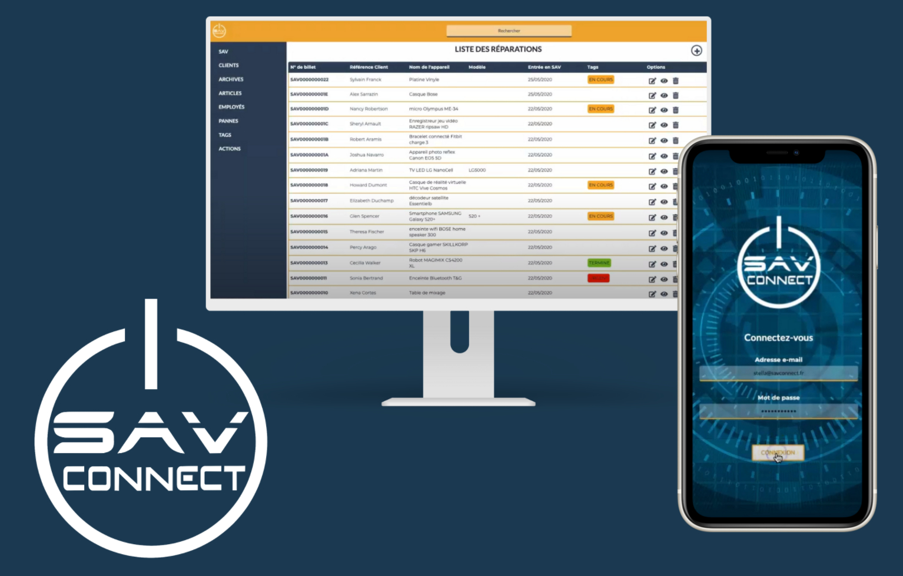
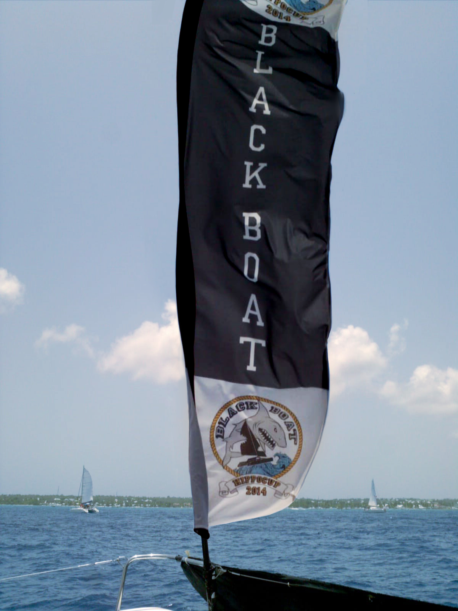
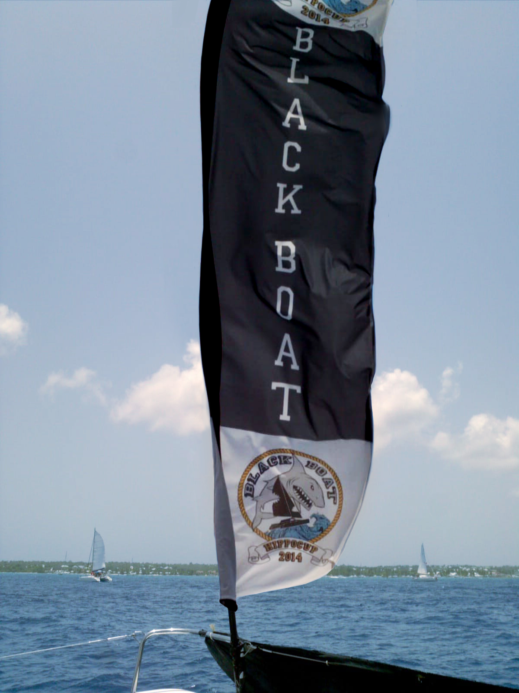

de 1 an (2j en formation, 3j en entreprise /semaine)
ou 2 ans (1j en formation, 4j en entreprise /semaine)
en contrat de Professionnalisation
Disponibitlité : Immédiate
experiences
Projet de fin d'étude: SAVconnect / 1mois - Mai 2020

Développement en équipe de 4 d'une application web et mobile permettant la gestion claire, pratique et
complète du service après-vente pour la société R.E.R(radio éléctronics rénnais). L'application
permet au client professionnel de bénéficier d'un outil unique pour la prise en charge, le suivi et
la remise au client d'un produit faisant l'objet d'un retour suite a une panne. La gestion du SAV
est, de ce fait, informatisé, centralisé et optimisé.
Formations
En cours : UX designer - Diplôme de niveau 7(bac+5)
Le parcours UX designer d'OpenClassrooms consiste en la réalisation de 10 projets validés par le biais
de soutenances auprès de professionnels du métier. Les projets sont des reconstitutions de scénarios
professionnels, des simulations du quotidien d'un UX Designer.
Voici les compétences que les projets OpenClassrooms permettent de mettre en pratique :
- Appliquer la démarche UX
- Élaborer une stratégie UX
- Mener une étude utilisateurs
- Alimenter une conception d'interface web / mobile / métier
- Réaliser une interface web / mobile / métier
- Mettre en oeuvre la démarche UX dans une équipe projet
- Promouvoir son travail au sein de la communauté UX
Formation et Certification Opquast : Maîtrise de la Qualité en projet Web


 



.jpg)